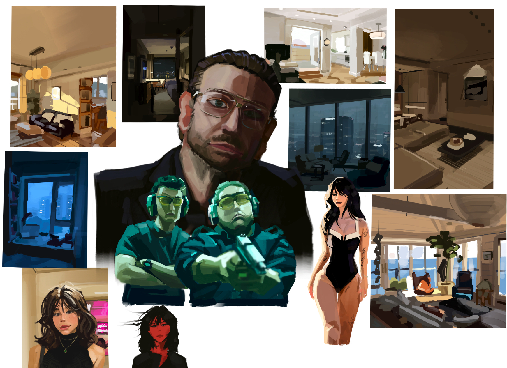
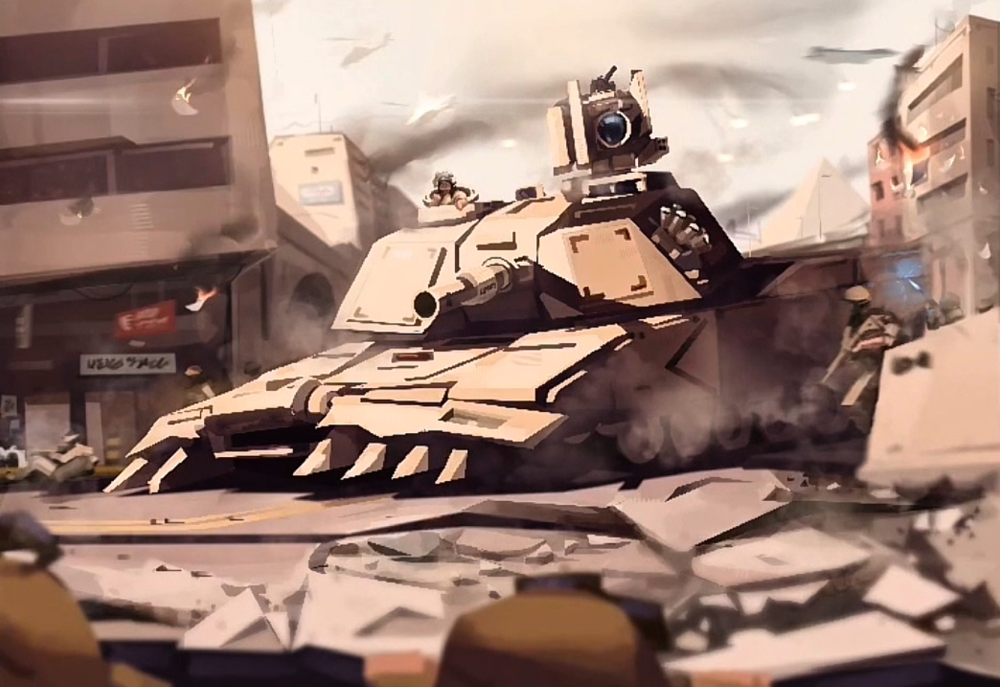

Arthur M · 1975
a digital painting comemorating the heroic actions of the crew of the Arthur M Anderson durring the sinking of the Edmund Fitzgerald in a november gale 1975.
Adriaen Ferranti is a digital illustrator blending figurative drawing with dreamlike narrative. Explore a curated selection of recent studio experiments, sketches, and detailed renderings.
View the worka digital painting comemorating the heroic actions of the crew of the Arthur M Anderson durring the sinking of the Edmund Fitzgerald in a november gale 1975.

a look into the vibrant life found within a market street in seoul.

moody study from the new york subway, pushing neon reflections and late-night atmosphere.

Loose figure work documenting gesture, rhythm, motion and rough studies.

a digital paintig that caotures the chaos and atmosphere of EA's Battlefield 6 TM
Adriaen Ferranti is a cleveland based artist whose practice emphasizes digital illustration. with a large background in visual arts and a track record of state level professional recognision, he is now currently pursuing an illustration degree at CIA (cleveland instatute of art).
For commissions, collaborations, or studio visits, reach out directly or follow along on social platforms for works-in-progress and announcements. instagram is perferable.
Email: aalauengcoferranti@cia.edu
Studio updates: Monthly notes on new pieces, behind-the-scenes sketches, and upcoming events.